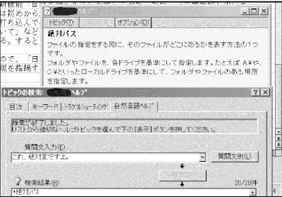

第二なんでやねん・新しいワープロソフト
最近、パソコンで使っているワープロソフトをバージョンアップした。何やら色々な新機能搭載らしい。文章を解析し、重要な部分を抜き出してくれる「文書要約」機能。操作がわからなくなったとき、例えば「文書を保存するには？」のように、日本語の疑問文を入力するだけで操作法が表示される「自然言語ヘルプ」など。すばらしい。電子情報人間の私は、さっそく「実験」を通じて、新機能のシステム分析を始めた。
まずは「文書要約」機能から検証しよう。説明によると「論文などの文書の要点を抜き出すのに便利です」とある。文書の中で「重要な部分」を拾い集めてくれるということらしい。そこで、真面目な文章に下らない一文を織り交ぜた文章を用意し、重要な部分を巧く拾い集められるかをテストしてみることにした。テスト文書は次のものを使用した。
「集団が集団としての力を生み、それを集団成因が獲得するために必要な条件を、プルードンは〈相互性〉に求めた。足がかゆい。
それは諸個人の自発的合意に基づく等価交換の関係であり、それを最も明確に表すのが契約であった。マグロが食いたい。こうした均衡ある相互関係を通じ、諸個人は自由と独立を保持しつつ相互に結合して相互主体的世界を構成する。金が欲しい！ 」
さて、「要約」の結果は……「足がかゆい。マグロが食いたい。金が欲しい！」
欲望丸出しの駄文になってもうたで。よう考えろ、それのどこが「重要な部分」やねん。
このダメさを見て、ほとんどシステムが推測できてしまった。たぶん、「要するに」や「つまり」などの「結論キーワード」の入った一文を抜き出すとか、「〜かも知れない」よりも「〜である」を優先して抜き出すとか、そういった程度の「要約」であろう。
なにが「論文の要点を抜き出すのに便利」やねん。こんなん使ってたら研究遅れるで！
文書要約機能の分析は終了である。結論は「誰も使わん」。こんなモノに私は金を払っていたとは。これはむしろ、バージョンダウンではなかろうか。やり場のない怒りから、私はこのワープロソフトをいじめてやることにした。「文書要約」に、要約しようのない文章をムリヤリ入れて、困らせてやることにする。ホレ、「数学の証明問題の解答」でも喰らえ！
問１ X<4 , Y>Z
であるとき、X×Y×Z=20 となる自然数(X､Y､Z)の組み合わせが４通り存在することを示せ('99 とつ東北大学)
証明｛
X=1 のとき Y×Z＝20 。
X=2 のとき Y×Z＝10 。
X=3 のとき Y×Z＝20/3 。
上記の条件を満たす自然数 (X,Y,Z)
の組み合わせの内、Y>Z となるような場合は
(X,Y,Z)=(1,10,2)(2,10,1)(1,5,4)(2,5,2)。
従って、組み合わせは４通りであることが証明された。（証明終） ｝
この「証明」を要約させてみたところ……
証明｛
X=1 のとき Y×Z＝20 。
X=2 のとき Y×Z＝10 。
従って、組み合わせは４通りであることが証明された。 ｝
Ｘが３の「場合分け」だけ勝手に飛ばしてもうとるで！ 何も考えてへんやろおまえ！ しかも、それでいてちゃっかり「証明された」などと書く辺りが汚い。証明問題がわからなくなると、とりあえず「以上より証明された」とか「明らか」とか書いておけば、何とかなるとでも思っているのか？ ここで私が真に論理学的な観点に立つなら、ここで証明されたことは、「(X､Y､Z)の組み合わせが４通り存在する」ということではなく、「この文書要約システムは頭悪い」ということである、と断言できる。
少しは気が晴れたので、次の新機能「自然言語ヘルプ」に移ろう。とは言え、「文書要約」のショックが抜けきらず、今回は初めから「いじめモード」で遊んでしまった。
手始めに「ヘルプを見るには？」と打ち込んでみる（ヘルプを見る方法をヘルプで調べてどうすんねん）。ところが「ヘルプの表記について」などと、ちぐはぐな回答を返してくる。憎々しい限りである。そこで「ヘルプなどいらんわ」と入力したが、「ヘルプの使い方」を表示して、あとは放ったらかし。いらん言うとるやろが。
多少、相手の言語能力に疑問を感じたので、「日本語はわかっとる？」と訪ねてみると、「日本語校正辞書とは」だの「わかりにくい否定表現を指摘する機能」だのと、なにやら難解なことを表示して煙に巻こうとする。ええかげんにせえよ！
こうなったら罵声のあらしで攻めよう。「カスが。価値のないクソ機械め」と入力。回答は「停電などの非常時に備えて定期的な間隔で文書を自動的に保存する方法」。どういうつながりが？ 真面目に言えば、「価値」という語に反応して、「価値のある文書」→「自動保存」となったんだろうねぇ。しかし、まだまだ押しが甘いようだ。今の罵声に、「死ねボケ！」を追加してみる。すると、トピックが変化した。なんでわざわざ「死ねボケ！」の入力にちゃんと対応しとんねん!!!!!!!
そんな細かい対応作るヒマがあったら、もっと全体を見ろや！
直すべきとこ、ようけあるで！ （完）

第三なんでやねんへ なんでやねん目次へ ＨＰトップに戻る